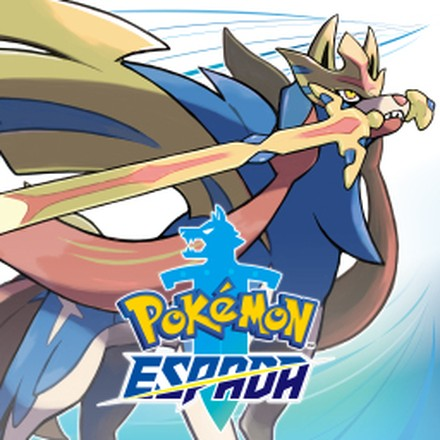
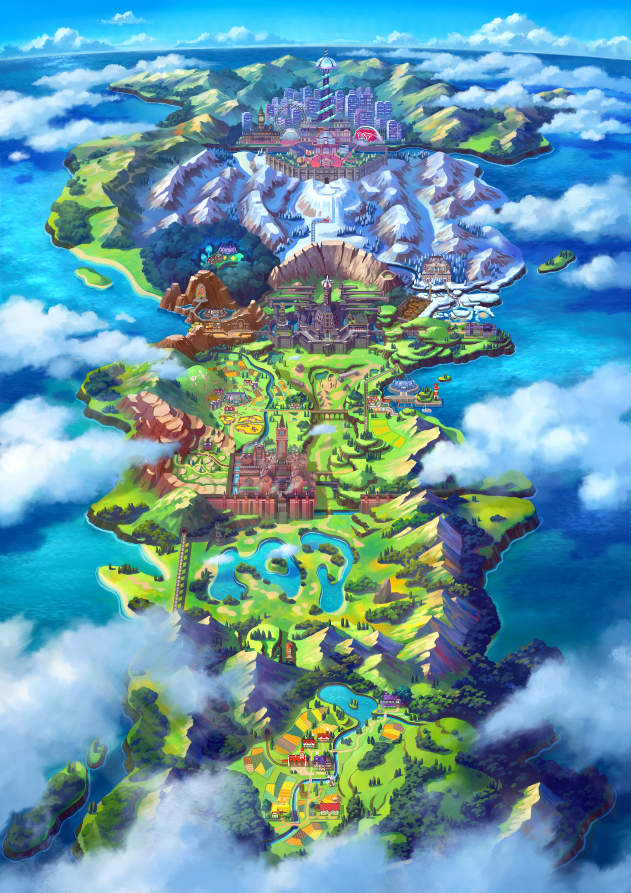
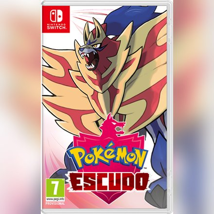
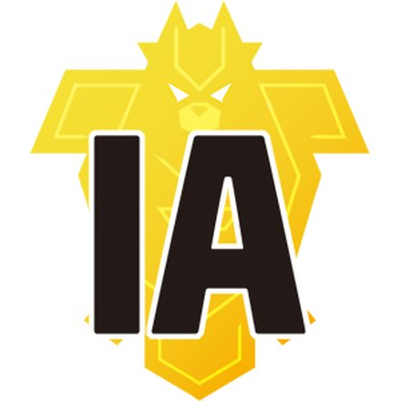
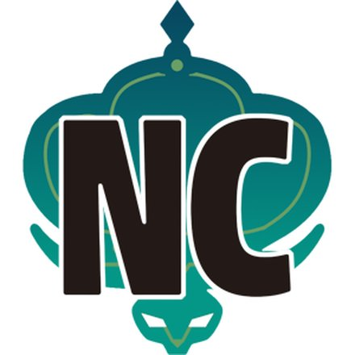
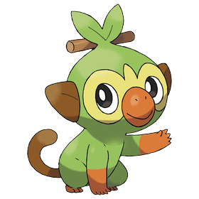
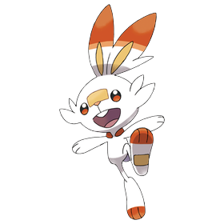
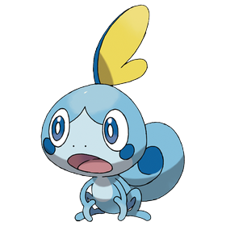

Pokémon Espada
Nintendo Switch · 2019
Región de Galar · Espada y Escudo (2019)
Galar se inspira en Gran Bretaña. Tiene campos verdes, pueblos con casas de piedra, ciudades industriales y una enorme zona salvaje en el centro. Los combates de gimnasio se hacen en grandes estadios con público, como si fueran partidos de fútbol, y los Pokémon pueden dinamaxizarse y hacerse gigantes.
Hace mucho tiempo llegó la Noche Negra, una catástrofe que casi destruye la región, y dos héroes la pararon con la ayuda de Zacian y Zamazenta. El Presidente Rose, el dueño de la empresa más importante de Galar, quiere conseguir energía para los próximos mil años y despierta a Eternatus, el Pokémon que causó la Noche Negra.
El protagonista vive en un pueblo tranquilo al sur de Galar. Lionel, el Campeón invicto de la región, le regala su primer Pokémon a él y a Paul, su hermano pequeño, que se convierte en su rival. La Profesora Magnolia y su nieta Sonia investigan el dinamax y la leyenda de la región.


Nintendo Switch · 2019

Nintendo Switch · 2019

Nintendo Switch · 2020

Nintendo Switch · 2020


